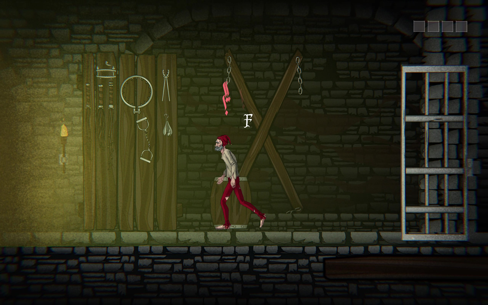
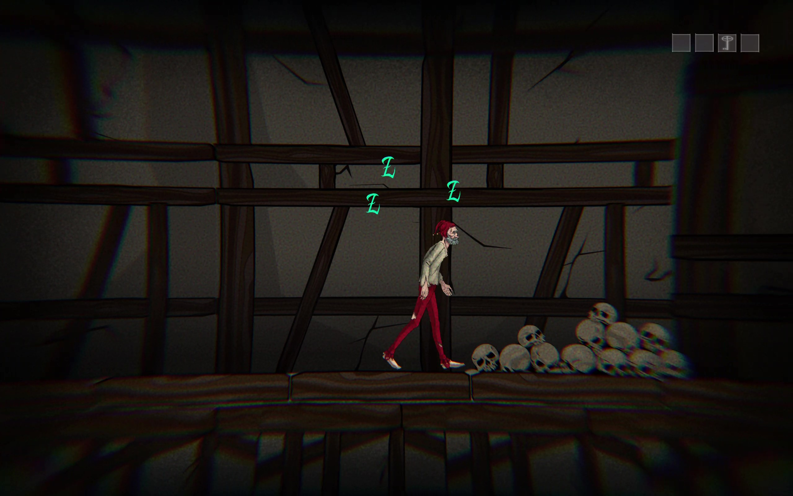
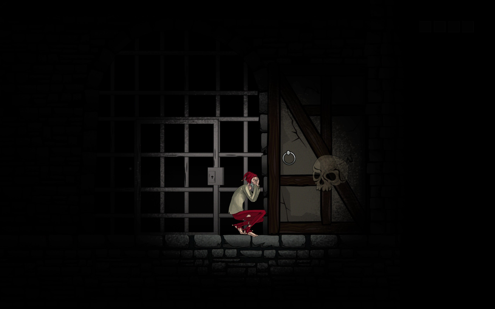

Game Development
2023
Amentior

In Amentior, you play as a jester who has gone mad in the dungeons, plagued by anxiety and illusions. Through luck, he obtains the keys to escape his cell, but this is only the beginning of his escape from the dungeon.
Amentior is a group project and was my first in-depth experience with Unity. I took part in the gameplay design and development of features, as well as coding them.
Click on this Google Drive link to access the playable game, extract the folder, and execute the .exe file.
How is it played?
There are guards and hungry dogs that the jester has to hide from by taking cover behind objects such as barrels. When he gets caught, he is thrown back into his prison cell. At the same time, his madness builds up. If it becomes too high, he moves slower and eventually becomes paralyzed, succumbing to it. To prevent this, the jester can crouch down and calm himself, gradually reducing the buildup, but he cannot move while in this state.
The player has to manage the madness buildup, which increases faster when near danger, while navigating through the dungeon and finding keys and levers to reach the next area, until finally escaping to freedom.



